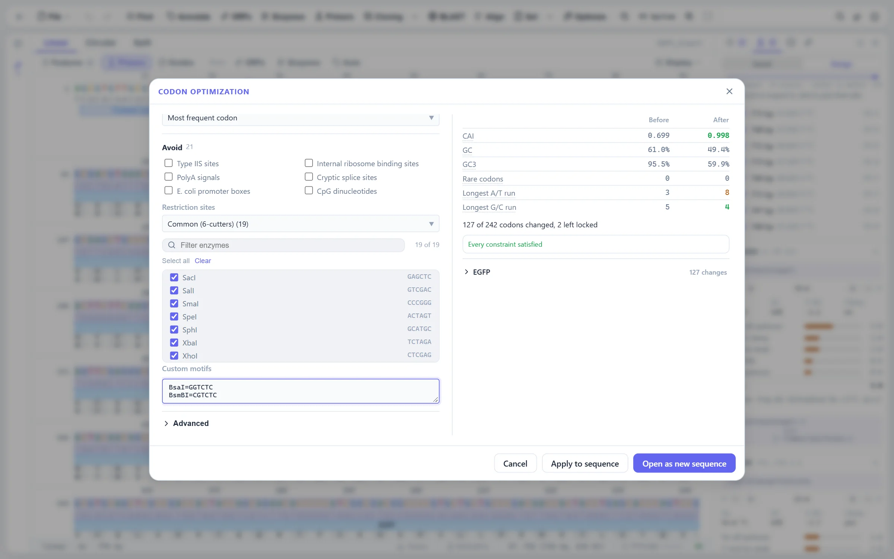

What it does
Codon optimization rewrites a coding region for expression in another host: pick the codons the host translates well, keep the restriction sites your cloning strategy needs free, and stay inside what a synthesis vendor will accept.
The protein is the invariant. Whatever the settings, the optimizer re-translates its own output and throws if it does not match the input protein, rather than returning a sequence that codes for something else.

What gets optimized
| Target | What it reads |
|---|---|
| Selection | The selected bases, read in frame from the first one |
| Coding features | Every CDS-like feature, individually checkable |
| Whole sequence | Frame +1, from position 0 |
A feature on the minus strand is read and written back in its own orientation, its codon start is honoured, and a feature spanning the origin of a circular sequence is followed round the join. Each region is reduced to a coding-strand string plus a map from every base back to its index, so those three cases share one code path. Two CDSs that share bases cannot both be optimized, since rewriting one changes the other's reading frame: the first wins and the overlap is reported.
Genetic codes and usage tables
Nineteen NCBI translation tables (1 to 6, 9 to 14, 16, 21 to 26) are stored as diffs against the standard code. This decides which codons are synonymous, so a mitochondrial gene is not truncated at a TGA that codes for tryptophan in its own code. Every translation in the app reads a codon through one function, which also handles the IUPAC ambiguity codes and U for T, though the optimizer and the usage counts read the plain table only: an ambiguous codon is left as it is and not counted.
| Source | Notes |
|---|---|
| Built in | E. coli K-12, B. subtilis, S. cerevisiae, P. pastoris, H. sapiens, CHO, Sf9, A. thaliana |
| Imported | EMBOSS cusp and GCG CodonFrequency files, kept in the browser's database |
The built-in tables are written from published genome-wide averages and are flagged as approximate in the data and in the interface: the rankings and rare-codon calls are right, the low-order digits may differ from a particular reference. Import a table when the exact figures matter. Both file formats are whitespace-aligned tables that order their columns differently, so the header is read and the columns taken by name, preferring the fraction, then the per-thousand frequency, then the raw count, since some files ship with the count column zeroed. Anything else with one codon and one number per line is accepted as a plain list, which covers a quick paste. A family with no usage stays at zero rather than being spread evenly, so the dialog can report an amino acid the table cannot encode instead of the optimizer silently inventing a preference.
Constraints
| Constraint | Detail |
|---|---|
| Forbidden motifs | Enzyme groups, saved enzyme sets, individual enzymes, custom IUPAC motifs, and presets for Type IIS sites, internal Shine-Dalgarno sequences, polyA signals, cryptic splice sites and E. coli promoter boxes. Checked on both strands. |
| Homopolymers | Separate limits for A/T and G/C runs |
| GC content | Global bounds plus a sliding local window |
| Repeats | Direct repeats over a length you set |
| Hairpins | Inverted repeats with a stem over a length you set, within a loop distance |
| CpG | Avoided when asked, for mammalian constructs |
| Locked codons | Start, stop, the first few codons, and anything under a protected non-coding feature |
Constraints are checked across the region boundary into the untouched flanks, so a site that would straddle the edge is still avoided. Codons are chosen either as the most frequent synonym or sampled from the host distribution; sampling is seeded, so a run reproduces exactly, and it avoids the long identical runs that always taking the most frequent codon produces. A rare-codons-only mode changes only codons below a within-family threshold.
Why greedy with backtracking, not a dynamic program
The walk goes left to right. Each codon takes the best synonym that leaves the window it can affect free of violations; when nothing fits, it steps back and tries the previous codon's next choice. Past a step budget it keeps the best remaining option and reports the violation rather than failing the whole run.
A full dynamic program is not an option here. The state would have to be the last K bases, where K is the longest constraint window, so the table is 4K wide. Direct repeats are the one constraint that is not local, since the other copy can be anywhere; they are tracked in an index built as the walk proceeds and rolled back on backtracking, which keeps the run linear where re-scanning per codon would make it quadratic.
Optimization runs on the main thread. A few thousand codons take milliseconds, and the dialog previews on a short debounce; past 60 kb of target it waits for an explicit run instead.
Metrics, and applying the result
CAI, GC, GC3, the rare codon count and the longest A/T and G/C runs are shown before and after. CAI is the geometric mean of relative adaptiveness over the region, skipping single-codon families (methionine and tryptophan), which carry no information about adaptation and would only drag every score toward 1.
Applying is an equal-length substitution: one undo entry, and no annotation moves, because no coordinate changes. The result can also be opened as a new sequence, leaving the original untouched.
Where to find it
Select a coding region or a CDS feature, then Codon optimization from the Tools menu or the command palette. Host tables are imported in the same dialog. Back-translation of a protein to a host's codon usage is in the protein view.
Limits
- The built-in usage tables are approximate by design. Import a cusp or CodonFrequency file when exact figures matter.
- Two coding features that share bases cannot both be optimized; the first wins and the overlap is reported.
- Hairpin avoidance looks for inverted repeats by length and loop distance. It is not a folding energy calculation.
- Past the backtracking budget the optimizer reports the violation it could not avoid rather than searching exhaustively.
References
- Sharp PM, Li WH (1987) The codon adaptation index, a measure of directional synonymous codon usage bias, and its potential applications. Nucleic Acids Res 15:1281-1295.
- Nakamura Y, Gojobori T, Ikemura T (2000) Codon usage tabulated from international DNA sequence databases. Nucleic Acids Res 28:292.
- Rice P, Longden I, Bleasby A (2000) EMBOSS: The European Molecular Biology Open Software Suite. Trends in Genetics 16:276-277.